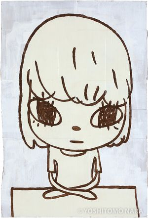
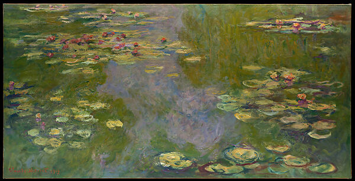

Designers Who Inspire Me!
these are just a few artists who inspire me
Yoshitomo Nara

He is a japanese artist born in 1959 who specializes in paintings
and sketches that are both innocent but with heavier themes.
He inspires me with the simpliciity in his works and reminds me that not every art form needs to be intricate to be good.
Claude Monet

A French painnter born in 1840, Monet reminds me to never cease to
referrence the beauty of nature in my designs cause they will forever be timeless.
Philip Johnson
An american architect born in 1906, Philip Johnson reminds me
to never stray away from designs that seem unconventional to society.